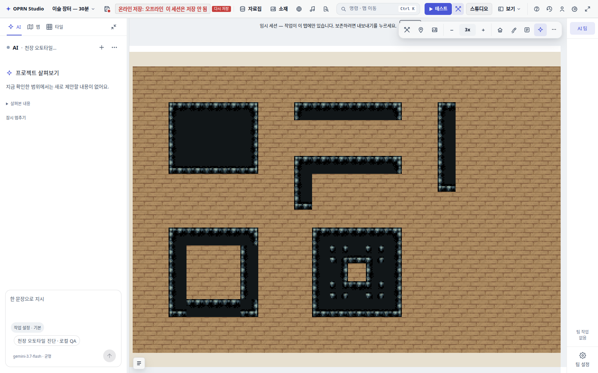
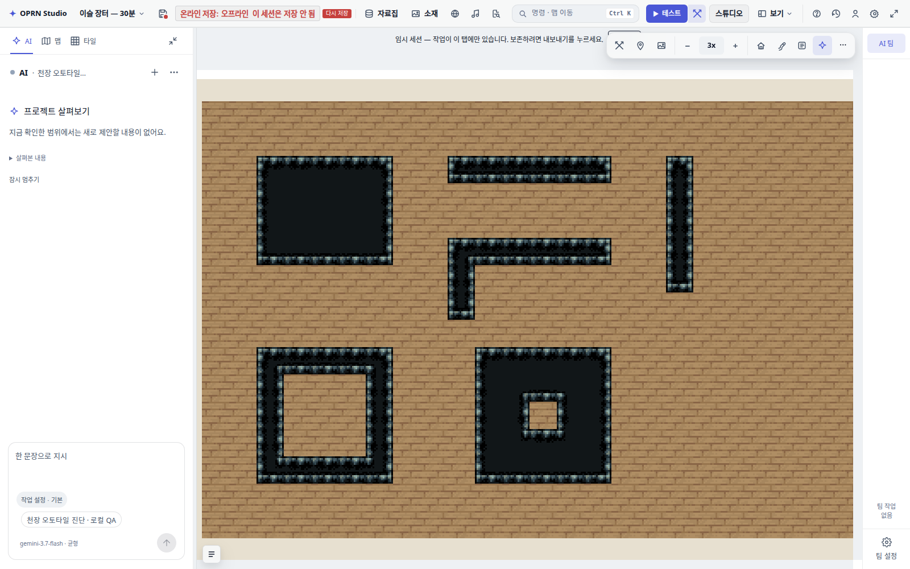
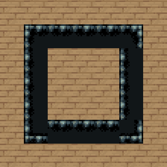
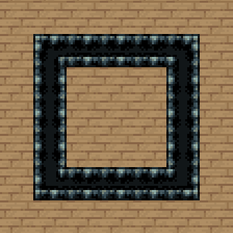
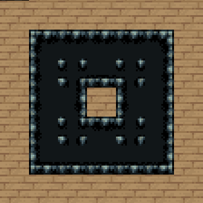
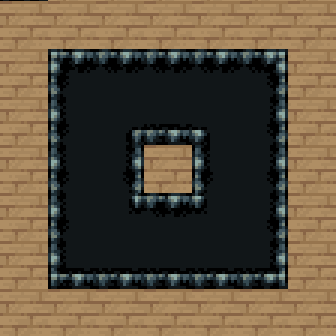

OPRN STUDIO · 2026-09-18 · 수정 후 실제 편집기 캡처
천장 연결 · 테두리 · 안쪽 모서리 수정
기본 칩셋 등록 누락을 해결하고, 천장 전용 8×8 조각 합성을 연결했습니다.
가로·세로 띠 양쪽 마감, L자·링의 안쪽 경계, 구멍 주변의 불필요한 모서리 조각을 확인했습니다.
수정 전

그룹을 수동 등록해도 얇은 띠 한쪽이 열리고, 구멍 주변에 점이 생겼습니다.수정 후

방 생성기 없이 기본 등록. 띠·링의 양쪽 테두리와 구멍의 네 모서리가 이어집니다.링의 안쪽 경계

수정 전
수정 후구멍의 오목 모서리

수정 전
수정 후확인 범위
기본 초기화에서 430 포함 그룹 1개 확인 · 같은 여섯 형태 비교 · 실제 마우스 드래그/지우기/Ctrl+Z 복원 확인. 기존 저장 변형은 유지되며 렌더에서 모서리를 합성합니다. 기존 사용자 그룹·타 칩셋·이식 소스에 고정 천장 규칙을 덮어쓰지 않도록 제한했습니다.
수정 파일: interiorCeilingAutotile.ts, terrainQuarterAutotile.ts, themePacks.ts, interiorRoomPipeline.ts. 관련 회귀 계약·PNG 픽셀 기대값·위키도 갱신했습니다.
별도 로컬 QA 세션의 실제 편집기 화면입니다. 사용자 원격 프로젝트는 수정하지 않았습니다. 런타임 실행/전체 타입 검사/vitest/게이트는 수행하지 않았습니다. 회귀 테스트 코드는 추가·갱신했으나 실행하지 않았습니다. observations.json의 before/after는 수정 코드에서 방 생성 초기화 호출 전후를 뜻하며 두 상태 모두 정상입니다. 과거 결함 상태는 이전 진단 보고서에 보존했습니다.